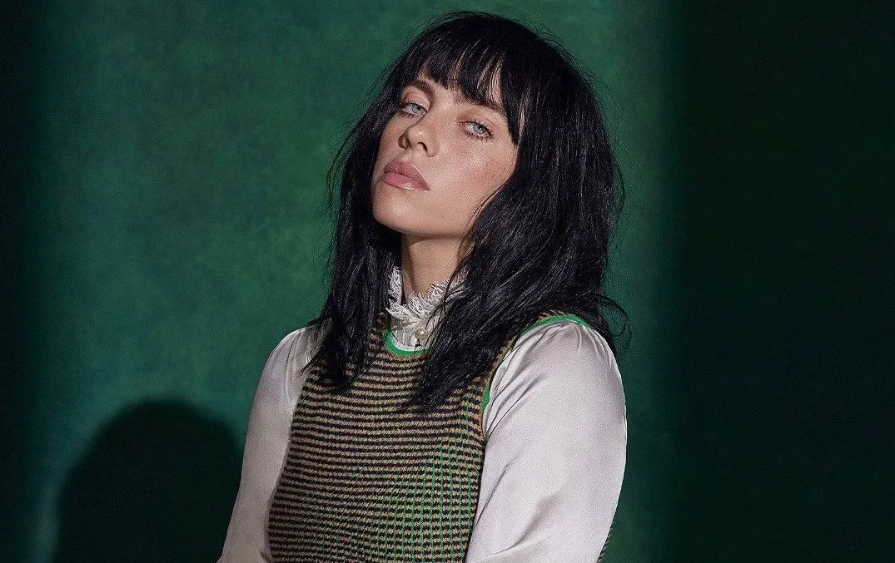

Billie Eilish Pirate Baird O'Connell (Los Angeles, 18 de dezembro de 2001) é uma cantora e compositora estadunidense. Ganhou popularidade em 2016, quando lançou o single de estreia "Ocean Eyes" no SoundCloud,[1] posteriormente lançado pelas gravadoras Darkroom e Interscope Records. A canção foi escrita e produzida por seu irmão Finneas O'Connell, com quem ela colabora em músicas e shows ao vivo. Eilish é mais conhecida por seu single "Bad Guy", de 2019, que atingiu o topo da Billboard Hot 100.
EilishEilish foi indicada para seis Grammy Awards, incluindo Gravação do Ano, Álbum do Ano, Canção do Ano e Melhor Revelação. Ela é a artista mais jovem a ter sido indicada nas principais categorias do Grammy.
Hit Me Hard And SoftHit Me Hard and Soft (estilizado em letras maiúsculas) é o terceiro álbum de estúdio da cantora estadunidense Billie Eilish, lançado em 17 de maio de 2024, através da Darkroom e Interscope Records.[1] O álbum foi revelado pela cantora em 8 de abril de 2024, por meio de seu próprio instagram.
